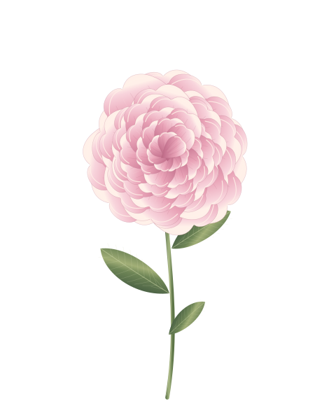
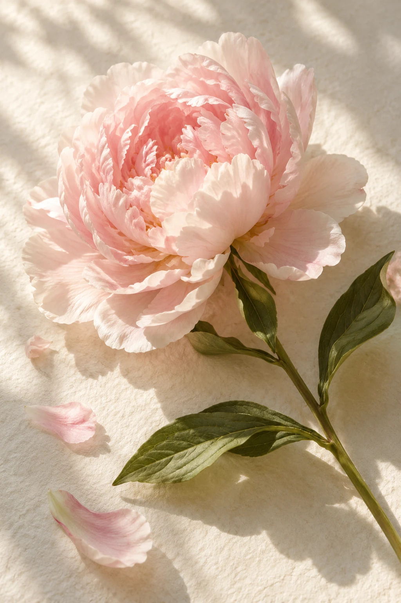

✳ A LITTLE ROMANCE, JUST FOR YOU
致，我的陈琳萱
世间的花，
都想为你盛开。
想把日子里的每一份喜欢，
都种成你伸手就能触碰的浪漫。
With love, always.花有花期，喜欢你没有。
THE FIRST BLOOM
为你盛开的，第 001 朵心动

✳正在唤醒花园
轻触花开 · 细赏花瓣 SVG
01 / THE FLOWER ARCHIVE
把心动，好好珍藏。
鲜花有千万种姿态，
我只想收藏，让你微笑的那一种。
花朵正在慢慢醒来…
这里还会长出，更多关于你的浪漫。

A MOMENT WORTH KEEPING真实的花
不止这一刻的浪漫✦
不止这一刻的浪漫✦
TURN A FLOWER INTO FOREVER
遇见的花，
也想留给你。
路过花店的那一眼，散步时偶遇的那一朵。
拍下来，把短暂的花期，变成细细描绘的心动。
拍下鲜花···生成花卉···自动珍藏
先由 MiniMax 确认照片主体是花，再生成去背景的花卉。
多朵花聚成一束，生成的藏品保存在本机。
02 / WORDS FROM MY HEART
有些话，
想借花告诉你。
花园的最后，藏着一封只写给你的信。
P.S. It's always you.轻轻拆开，有一份喜欢在等你